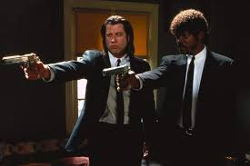

Este recorrido reúne fragmentos, personajes y momentos memorables de una película
que convirtió el crimen, el humor y la música en una sola pieza de culto.
Vicent Vega y Jules Winnfield

La historia sigue a personajes como Vincent Vega y Jules Winnfield, dos sicarios que trabajan para el jefe del
crimen organizado Marsellus Wallace, mientras que otras tramas involucran a un boxeador que intenta escapar de la mafia y
a una pareja que intenta robar en un restaurante.
Mia Wallace
Mia Wallace es un personaje ficticio interpretado por Uma Thurman en la película de 1994 de Quentin Tarantino,
Pulp Fiction. Thurman recibió una nominación al
Óscar a la mejor actriz de reparto por su interpretación, y el personaje se convirtió en un ícono cultural.
Mia se inspiró en la actriz Ana Karina, una figura destacada de la Nueva Ola Francesa y musa de Jean-Luc Godard.
Para el look de Mia en la película, diseñadora de vestuario Betsy Heimann creó su apariencia para que fuera la de
una mujer Perro de embalse. También incluyó marcas de diseñadores como Chanel para demostrar que ella es la moll de
un rico jefe criminal.
Además, su apariencia se inspiró en cine mudo estrellas y destinado a invocar un mujer fatal.
La personalidad y la apariencia de Mia también recuerdan a Elvira Hancock de Brian De Palma's Cara de cicatriz.